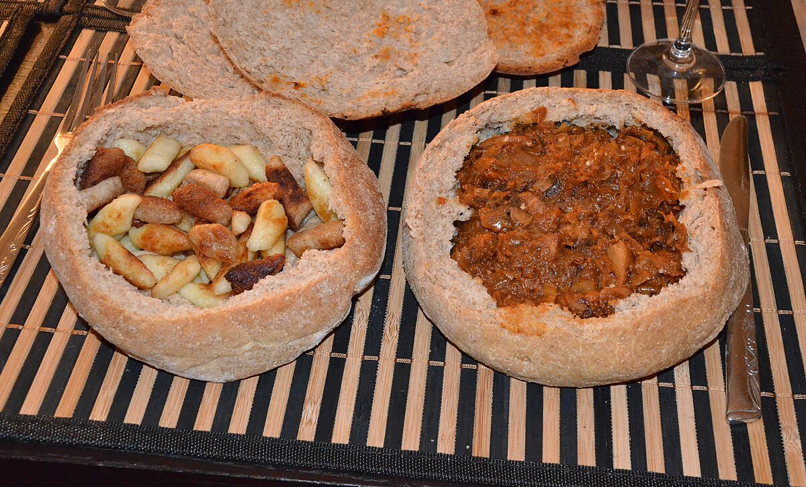
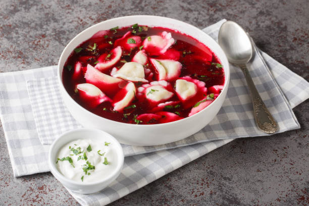
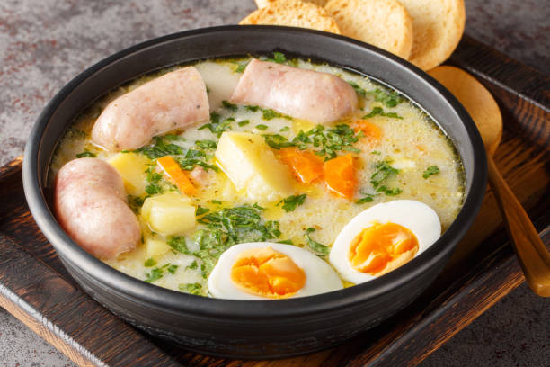
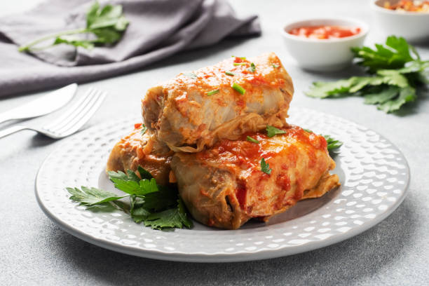
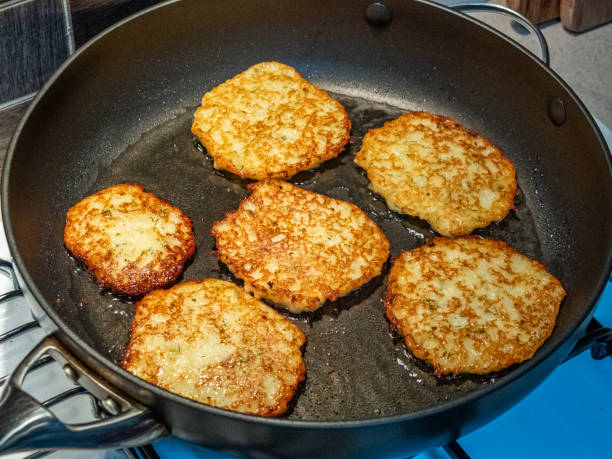
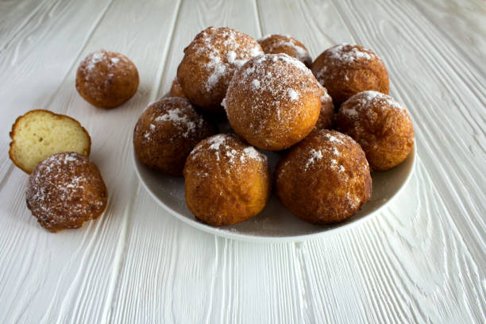
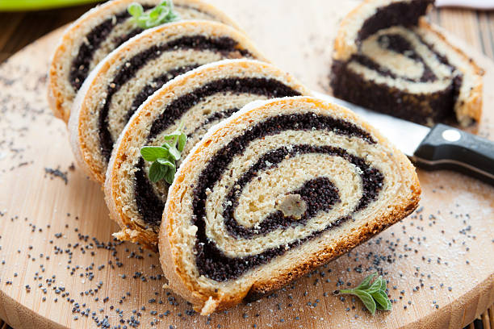

Food
Some of the most delicious and iconic Polish cuisines.
Pierogi
Pierogi are perhaps the most beloved and iconic Polish dish. These versatile dumplings can be savoury or sweet, with fillings such as potatoes and cheese (pierogi ruskie), sauerkraut, minced meat, or seasonal fruits like blueberries. They are boiled and often pan-fried in butter, giving them a golden, crispy edge. Pierogi are more than just food; they are a cultural symbol of hospitality, traditionally served at festive occasions and family gatherings. Each region in Poland has its own variation, and they’re even a popular street food staple today.

Pierogi with minced meat and cabbage filling
Bigos (Hunter's Stew)
Bigos is a hearty and aromatic stew that embodies the spirit of Polish cuisine. A slow-cooked mix of sauerkraut, fresh cabbage, and a variety of meats such as pork, sausage, or venison, it’s flavoured with bay leaves, allspice, and sometimes dried fruits like prunes. Bigos is often prepared in large batches and reheated over several days, with the flavours deepening each time. Traditionally associated with hunters returning from the forest, it’s now a dish served at family tables during winter and festive holidays, especially Christmas.
Bigos and Kopytka served in bread bowls
Barszcz (Beetroot Soup)
Barszcz is a strikingly vibrant red soup made from beets, known for its earthy, slightly sweet, and tangy flavour. It’s often served with uszka (small dumplings filled with mushrooms) during the Christmas Eve supper, making it an essential part of Polish holiday traditions. Beyond Christmas, it’s enjoyed year-round in various forms, from clear consommé-style to heartier versions with vegetables and potatoes. The soup is not just a culinary delight but also reflects the importance of beets in Polish agriculture and diet.
Barszcz with Uszka
Żurek (Sour Rye Soup)
Żurek is a deeply comforting soup with a distinctive tanginess derived from fermented rye flour. Typically enriched with white sausage, hard-boiled eggs, and sometimes potatoes, it has a creamy, hearty consistency. Żurek is a staple during Easter, symbolising rebirth and renewal, but it’s equally loved as an everyday dish. Served in a bread bowl at some traditional restaurants, it combines the rustic flavours of Poland’s countryside with the warmth of home cooking.
Żurek served with its traditional ingredients
Gołąbki (Cabbage Rolls)
Gołąbki, which translates to “little pigeons,” are cabbage rolls filled with a savoury mixture of rice, minced meat (usually pork or beef), and spices. These are then simmered in a rich tomato sauce until tender. The name reflects their delicate, rolled appearance, and the dish itself has a long history tied to the agricultural traditions of Poland. Gołąbki are a popular comfort food, served at weddings, holidays, and family gatherings. They’re often paired with mashed potatoes for a truly satisfying meal.
I don't actually like this one
Placki Ziemniaczane (Potato Pancakes)
Placki Ziemniaczane are golden, crispy potato pancakes that are as simple as they are delicious. Grated potatoes are mixed with onion, egg, and flour, then fried to perfection. They can be served savoury, topped with sour cream or a meaty goulash, or sweet, with sugar or applesauce. Placki are a testament to the importance of potatoes in Polish cuisine and remain a beloved dish for both quick meals and special occasions.
They're like Hash Browns but infinitely better
Paczki
Pączki are light, fluffy doughnuts that hold a special place in Polish culture, especially on Fat Thursday (Tlusty Czwartek), a day of indulgence before Lent begins. They are filled with a soft inside and dusted with powdered sugar or glazed. Traditionally, eating pączki was believed to bring good luck for the coming year. Today, they’re a popular treat year-round, showcasing the sweeter side of Polish cuisine.
Tłusty Czwartek is similar to Pancake Tuesday
Makowiec (Poppy Seed Roll)
Makowiec is a beautifully rolled pastry filled with a rich mixture of poppy seeds, honey, nuts, and dried fruits, often flavoured with orange zest or rum. It is a staple dessert during Christmas and Easter, symbolising prosperity and abundance. The preparation of the poppy seed filling, which can take hours to perfect, reflects the labour of love in Polish baking traditions. With its striking spiral pattern when sliced, Makowiec is as visually stunning as it is delicious.
Makowiec nicely cut and laid out